A UX case study merging ride-hailing and micro-mobility into one eco-conscious platform — built on user research, shaped by four rounds of usability testing.
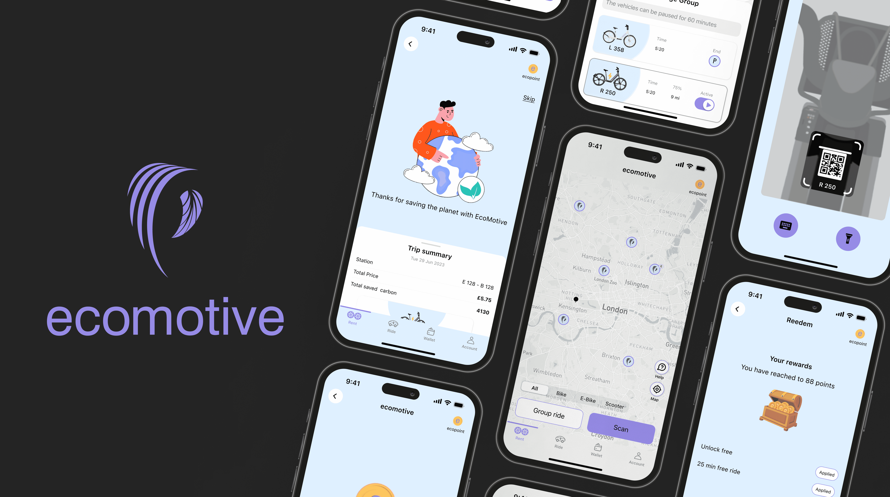
London's air pollution and urban congestion are growing problems — and fragmented transport apps aren't helping. EcoMotive merges ride-hailing and micro-mobility into one platform, offering bikes, e-bikes, scooters, and full electric cars under a single interface.
The mission is twofold: make sustainable transport the easiest option, and reward users for choosing it.
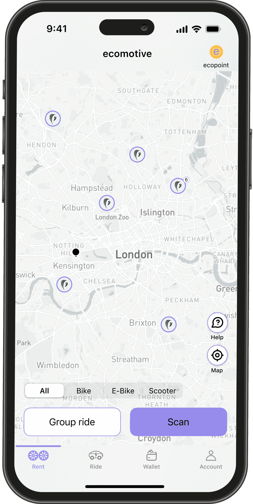
Designing a unified mobility platform isn't just a UI problem — it's a mental model problem. The project surfaced three core design challenges before a single wireframe was drawn.
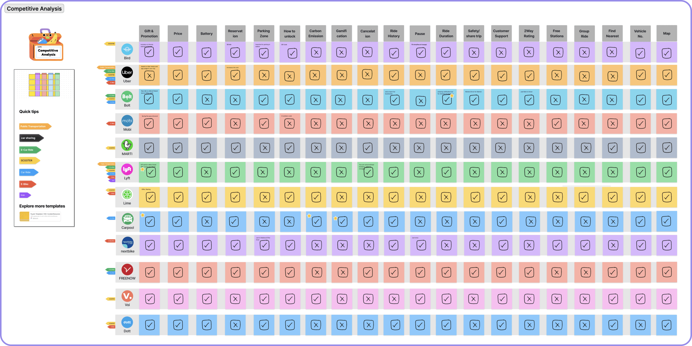
Research included a survey of 88 participants, 10 user interviews, and an affinity diagram across 4 pain point categories. Card sorting with 9 participants shaped the information architecture. From this, one primary persona emerged: an environmentally conscious urban professional who finds existing micro-mobility apps fragmented and difficult to trust.
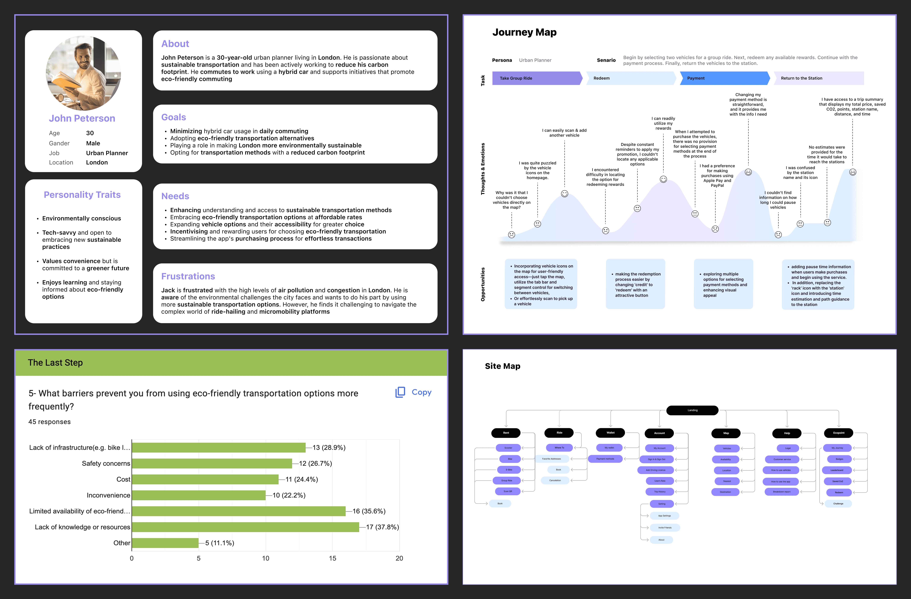
Before wireframing, I mapped the complete user journey — from onboarding through vehicle selection, group ride, reward redemption, and return to station. This surfaced two critical decision points early: how users switch between vehicle types, and how the payment and reward flow connect. Both became central to the iteration process.
Four rounds of usability testing uncovered three recurring design problems. Each went through multiple iterations before landing on a solution that felt right for users and true to the product's eco mission.
Users were overwhelmed by all vehicle options at once. The map — the most important tool for selecting a vehicle — was buried beneath the feature grid.
Made the map the primary interface. Vehicle type switching moved to a segment control bar at the bottom. 4 iterations led to a final design where spatial context comes first — users see where vehicles are before they decide what to take.
Users couldn't simultaneously choose a group ride and select individual vehicles. The scooter option also raised a security concern — it required uploading a driving licence, which users were uncomfortable sharing.
Introduced a dedicated group ride button to separate the two decisions. Removed scooter from group ride options entirely. In the final version, users can start a group ride in two ways: by tapping the group ride button, or by scanning a second vehicle after their first.
Integrating the ecopoint reward system into the landing page without making the app feel like a game. Users needed to understand it quickly — but it couldn't dominate the core transport experience.
After 5 icon placement iterations, the final version uses a persistent but subtle ecopoint icon on the map screen. Tapping it expands into the full gamification layer — journey history, leaderboard, badges, and saved CO₂ — without ever disrupting the primary booking flow.
Users struggled to access comprehensive vehicle details during selection — battery level, pricing, saved carbon, distance, and station name were all needed before committing to a vehicle.
Introduced a card design that surfaces all key vehicle information in a compact, scannable format. The card appears when a vehicle is tapped on the map — keeping the map uncluttered until the user needs the detail.
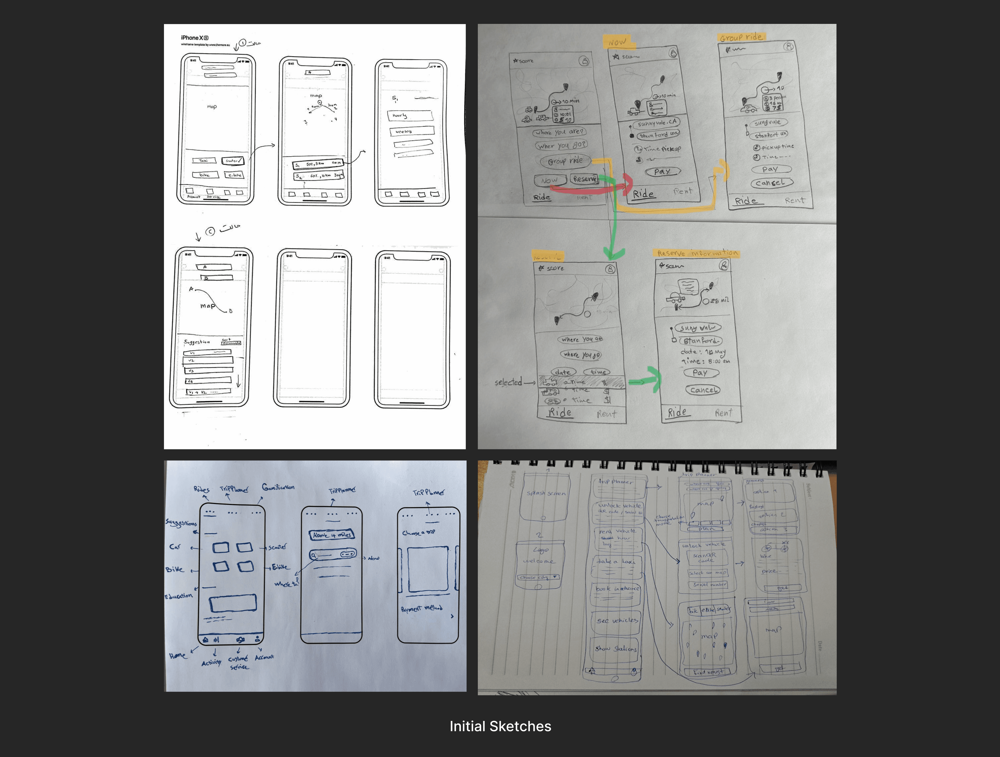
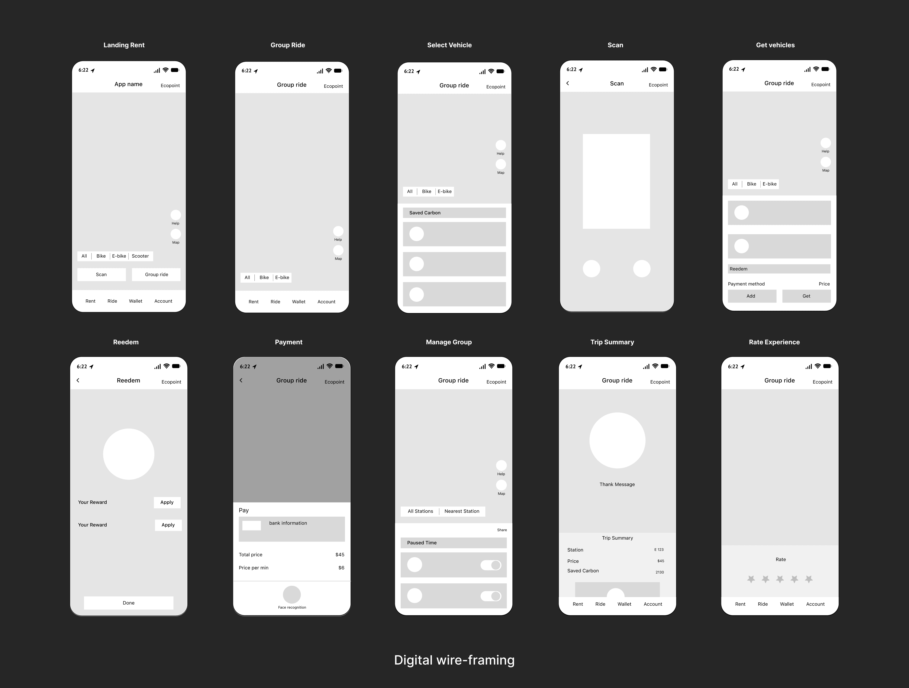
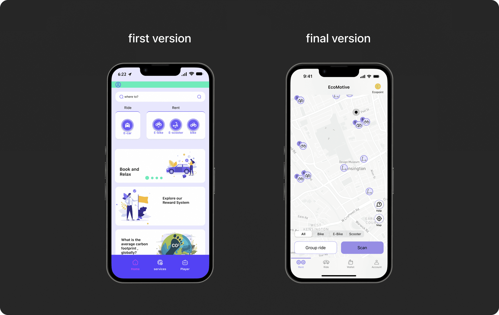
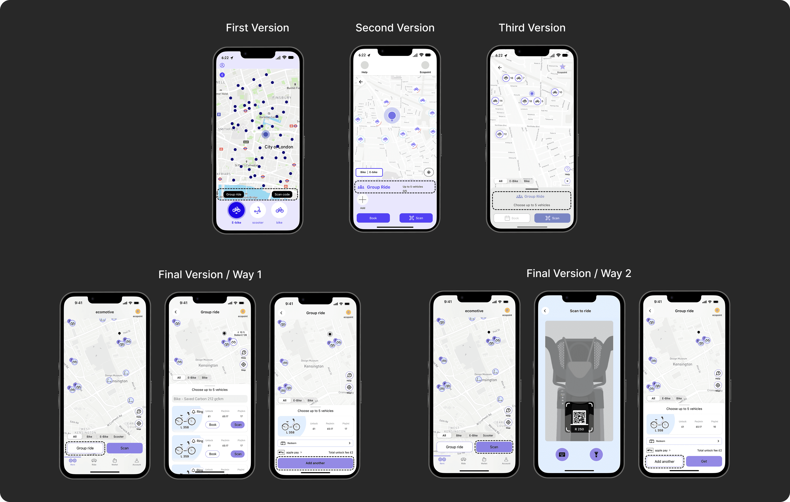
The visual direction draws from natural environments and premium brand references — resulting in a palette that feels both eco-conscious and trustworthy. A purple primary signals the ecopoint gamification layer while neutral tones keep the map-first experience calm and focused.
The full component system was built in Figma and tested for WCAG AA compliance across 5 colour vision types.
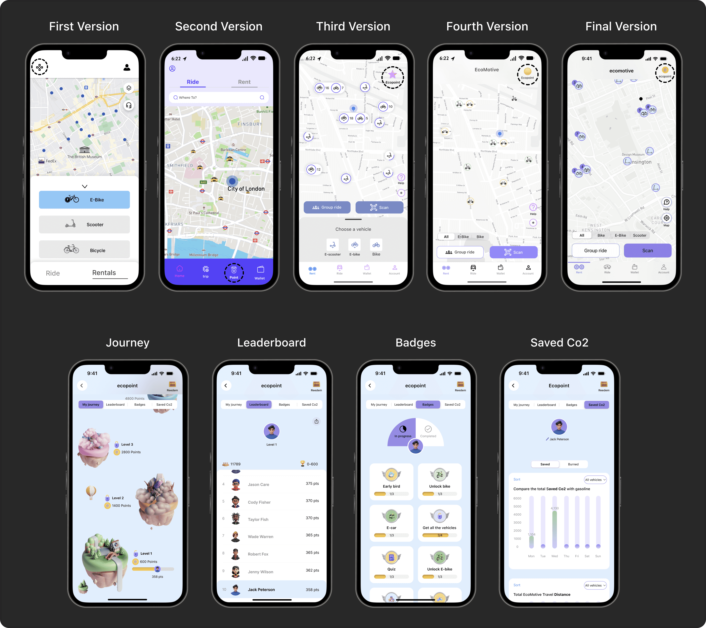
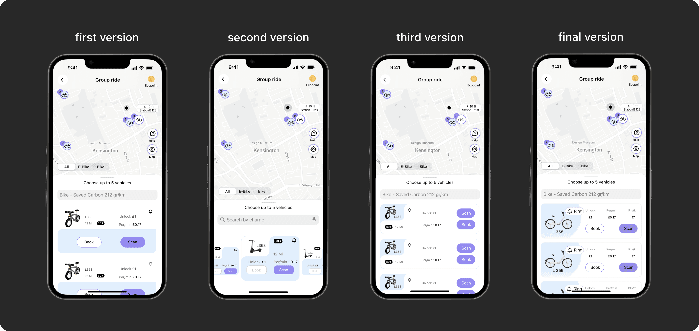
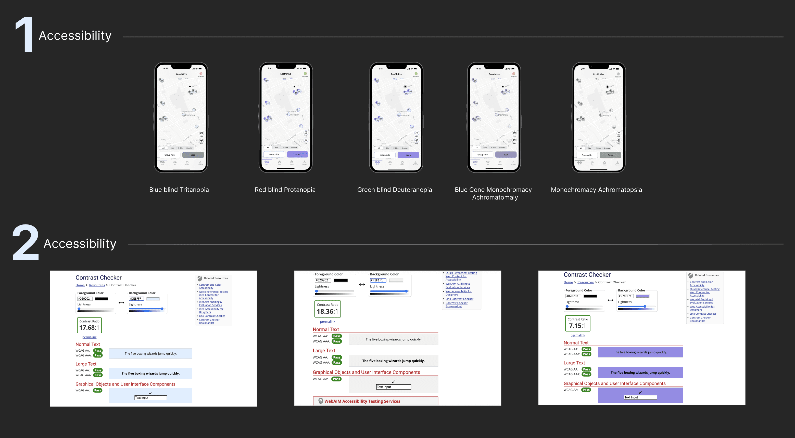
EcoMotive delivers a unified micro-mobility experience across four vehicle types, with built-in gamification that makes sustainable choices feel rewarding rather than obligatory. The final design emerged from four usability test phases and over 15 design iterations across the core user journeys.

"Every feature we added needed to earn its place — because the moment the app felt complex, the eco mission failed."